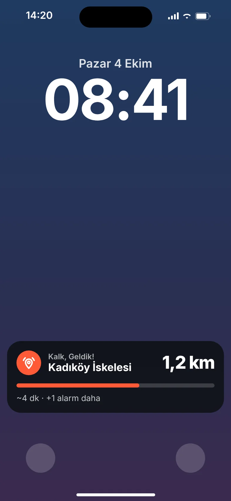

Sen uyu,
durağına gelince
biz uyandıralım.
Gideceğin yeri haritada seç, telefonu kilitle. Hedefe vardığın anda Kalk, Geldik! çalar — telefon sessizdeyken bile.
Üç adımda kur, unut
Varış saatini tahmin etmene gerek yok. Alarm zamana göre değil, konumuna göre çalar.
Hedefini seç
Durak, iskele, mekân ya da adres ara veya haritaya dokun. Alarm alanının büyüklüğünü belirle.

Telefonu kilitle
Kalan mesafeyi ve tahmini süreyi kilit ekranından takip et. Ya da hiç bakma, uyu.
Kalk, geldik!
Alarm alanına girdiğin an yüksek sesli alarm çalar. Durdur ya da 5 dakika ertele.
Durağını kaçırmaman için her şey
Otobüs, metro, metrobüs, vapur, tren — nereye gidiyorsan.
Sessiz modda da çalar
iOS 26.1 ve sonrasında sistem alarmı olarak çalar; sessiz anahtarı, Odak ve Uyku modu onu durduramaz.
Kilit ekranında canlı
Canlı Etkinlik ve Dynamic Island'da kalan mesafe, ilerleme çubuğu ve tahmini varış süresi.
Güçlü yer arama
Apple Haritalar ile durak, mekân ve adres ara; sonuçlar yakınından başlayarak sıralanır.
Birden fazla alarm
Aynı anda birkaç hedef kur. Her alarm kendi renginde, haritada ve kilit ekranında ayrı görünür.
Kayıtlı yerler
Ev, İş, Okul ya da kendi etiketin. Sık gittiğin yerlere tek dokunuşla alarm kur.
Geçmişten tekrar kur
Önceki yolculukların listelenir; aynı alarmı bir dokunuşla yeniden başlat.
Telefon cebinde, gözün kapalı.
Kalk, Geldik! konumunu arka planda takip eder; uygulamayı açık tutman gerekmez.
- Hedefe yaklaşınca uyarı. Alarm alanına az kala bir ön bildirim gelir.
- Alarm renkleri. Çalan alarm, kilit ekranında da kendi renginde görünür.
- Pil dostu. Hedeften uzaktayken seyrek, yaklaştıkça sık konum alır.
- Erteleme. Bir durak önce mi uyandın? 5 dakika ertele.
30 saniyede Kalk, Geldik!
Uyuyakalan yolcunun hikâyesi.
Konumun sende kalır.
Hesap yok, reklam yok, analiz aracı yok. Konumun yalnızca bir alarm aktifken ve yalnızca telefonunda işlenir; hiçbir sunucuya gönderilmez.
Gizlilik politikasını oku →Sık sorulan sorular
Telefon sessizdeyken alarm çalar mı?
Evet. iOS 26.1 ve sonrasında alarm, saat uygulamasındaki alarmlar gibi sistem alarmı olarak çalar; sessiz anahtarı ve Odak modları onu engellemez. Daha eski iOS sürümlerinde uygulama alarm sesini kendisi çalar ve bildirim gönderir.
Uygulamayı açık tutmam gerekiyor mu?
Hayır. Alarmı kurduktan sonra telefonu kilitleyebilirsin. Uygulamayı uygulama değiştiriciden yukarı kaydırıp kapatma; iOS'un arka planda konumu iletebilmesi için uygulamanın arka planda kalması gerekir.
Neden "Her Zaman" konum izni istiyor?
Ekran kilitliyken ve uygulama arka plandayken hedefe vardığını anlayabilmek için. Konum yalnızca aktif bir alarm varken kullanılır ve telefonundan dışarı çıkmaz.
Pili çok tüketir mi?
Hedefe uzakken konum seyrek alınır, yaklaştıkça sıklaşır. Alarm bitince takip tamamen durur. Uzun yolculuklarda yine de telefonunun şarjlı olmasını öneririz.
Metroda, tünelde çalışır mı?
Konum, GPS ve çevredeki Wi-Fi/baz istasyonlarından alınır. Tünellerde konum gecikebilir; bu yüzden metroda alarm alanını biraz daha büyük (ör. 1 km) seçmeni öneririz.
Ücretli mi?
Hayır, Kalk, Geldik! ücretsiz. Hesap açman da gerekmiyor.
Başka bir sorun mu var? Destek sayfasına göz at.
Bir daha durağını kaçırma.
Kalk, Geldik! çok yakında App Store ve Google Play'de.